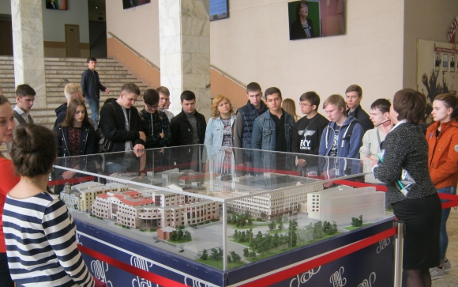

«Плешка» — как кузница технарей и будущих бизнесменов.
Почему выпускников РЭУ им. Г.В. Плеханова называют Специалистами с большой буквы. Многие, услышав название «Российский экономический Университет имени Г.В. Плеханова», полагают, что из его стен выходят исключительно специалисты по экономике. Потому что далеко не все знают: здесь можно получить великолепное техническое образование. И нередко абитуриенты, мечтающие об инженерном образовании, обходят «плешку» стороной.А зря!
Не только экономика
Действительно, Российский экономический Университет имени Г.В. Плеханова, имеющий более чем 110-летнюю историю, считается одним из ведущих экономических вузов страны. Однако он дает своим студентам качественное образование не только в области экономических, но и технических наук.К примеру, направление «Технологические машины и оборудование» — одно из старейших в РЭУ им. Г.В. Плеханова. Подготовкой специалистов по этому направлению занимается факультет, который сегодня называется «Факультет гостинично-ресторанной, туристической и спортивной индустрии» — сокращенно ГРТСИ, в том числе кафедра ресторанного бизнеса.
Здесь, к слову, надо заметить, что Плехановский университет, хоть и имеет давнюю историю и дает студентам классическое базовое образование, постоянно идет в ногу со временем, меняя структуру и, соответственно, названия факультетов, кафедр, набор дисциплин и т.д. таким образом, чтобы его выпускники всегда были востребованы отечественной экономикой, промышленностью, наукой.
К примеру, кафедра ресторанного бизнеса обучает студентов по таким весьма востребованным инженерным направлениям, как «Технологические машины и оборудование» (профиль — «Машины и аппараты пищевых производств»), «Технология продукции и организация общественного питания» (профиль — «Технология и организация ресторанного дела»), «Технология продукции и организация общественного питания» (профиль — «Технология и организация предприятий быстрого питания»), «Менеджмент», (по профилям «Менеджмент ресторанного бизнеса» и «Менеджмент на предприятиях ресторанно-гостиничного бизнеса»).
По этим дисциплинам обучение ведется в очной форме по программе бакалавриата (срок обучения — 4 года) как на бюджетной, так и на договорной основе. После четырех лет обучения выдается диплом государственного образца о высшем образовании с присуждением степени бакалавра по выбранному направлению подготовки.
В дальнейшем выпускники бакалавриата могут продолжить обучение, по магистерским программам (срок обучения — 2 года). Магистров готовят по направлениям «Технологические машины и оборудование» (профиль — «Технические комплексы ресторанной индустрии») и «Менеджмент» (профиль — «Менеджмент в индустрии питания»).
Любопытно, что около 60% выпускников-бакалавров поступают на бюджетную магистратуру других направлений. Здесь же, в «плешке», но не на инженерное, а на другое направление. Например, на управленческое.
После окончания магистратуры студенты имеют возможность поступить в аспирантуру.
Проектирование, инжиниринг, эксплуатация...
Обучение построено таким образом, что, с одной стороны, позволяет выпускникам получить глубоко профессиональные знания, а с другой — стать специалистами широкого профиля, способными заниматься самой разнообразной деятельностью в зависимости от складывающейся рыночной конъюнктуры. С целью подготовки профессионалов мирового уровня в учебный процесс внедрены программные продукты, такие как Autodesk AutoCAD, Anylogic, Microsoft Power Point, Microsoft Excel и другие.Закончив обучение по этому профилю, выпускники обладают знаниями и навыками, которые позволяют им создавать конкурентоспособную продукцию машиностроения, основанную на применении современных методов и средств проектирования, расчета, математического, физического и компьютерного моделирования. Проектирование, производство, продажа, эксплуатация, сертификация всех видов торгово-технологического оборудования — вот далеко не полный перечень возможностей выпускников «технического направления» РЭУ им. Г.В. Плеханова.
Сюда нужно добавить и знание законов управления производством — этому, как уже было сказано, здесь тоже учат. И получается, что выпускник факультета — готовый топ-менеджер с великолепным техническим образованием! Специалист, которых так не хватает в современной Российской действительности.
Когда студента уже ждут на работу...
Будущего специалиста всегда волнует вопрос — вот закончит он вуз, получит диплом... А дальше-то что? Куда пойти работать, сумеет ли применить свои знания на практике? Иначе говоря, будет ли он востребован?Перед выпускниками кафедры ресторанного бизнеса такого вопроса не встает. Потому что кафедра имеет деловые контакты с отраслевыми предприятиями. Большинство преподавателей педагогическую деятельность на кафедре совмещают с научно-производственной работой, активно привлекая к ней и студентов. Так что практически все студенты старших курсов уже знают, где будут работать, получив диплом — их там ждут.
Другой не менее важный вопрос — а кем (если не сразу, то в перспективе) будущие выпускники могут стать? Каких высот достичь?
Как правило, многие из них становятся руководителями предприятий, занимающихся проектированием, изготовлением, поставкой, сервисным обслуживанием различного оборудования. Причем не только для пищевой перерабатывающей и торговой промышленности. Потому что тепловое оборудование, которому в процессе обучения уделяется ключевое внимание, работает на основе одних и тех же физических законов и принципов — не важно, пищевое это оборудование, или иное, например, связанное с оборонной промышленностью или промышленностью строительных материалов. Это касается и холодильного оборудования (которое здесь тоже основательно «проходят»), и механического, и любого другого.
Еще одна группа должностей, на которые приглашают выпускников кафедры — главные конструкторы, главные инженеры, главные специалисты (это главный энергетик, главный механик, главный метролог и т.д.) предприятий.
Ну и, конечно, — собственный бизнес еще никто не отменял — выходцы кафедры и факультета в целом обладают достаточным объемом знаний, чтобы открыть собственное предприятие. Открыть свое дело — мечта многих молодых людей сегодня. Только не всем для этого хватает знаний и навыков. А вот выпускникам «плешки» — как правило, хватает!
Потому что здесь студент получает, как уже было сказано, не только технические, но и экономические, а также юридические знания — как раз весь набор, что нужен бизнесмену. А кроме того, в ходе учебы можно овладеть и несколькими иностранными языками — было бы желание! А это уже поможет вывести бизнес на международный уровень.
— Ну и, конечно же, наши выпускники могут работать — и многие работают! — в органах власти, как в ее исполнительной, так и законодательной ветвях, — рассказывает заведующий кафедрой ресторанного бизнеса Виталий Перов. — Особенно в структурах, которые занимаются регулированием, вопросами определения стратегии долгосрочных программ и т.д.
Дмитрий ЗИБОРОВ
Наша справка:
РЭУ им. Г.В. Плеханова сегодня — это крупнейший образовательный центр по подготовке специалистов высшей квалификации. Количество студентов в Университете на сегодняшний момент (08.01.2017 - прим.) составляет 64000 человек. РЭУ имени Г.В. Плеханова всегда славился своим преподавательским коллективом. Сегодня здесь работают около 3000 сотрудников, свыше 700 из них являются кандидатами наук, около 350 — докторами. И все они неустанно трудятся над тем, чтобы их знания были переданы новому поколению студентов и аспирантов.Этот материал опубликован в декабрьском номере Отраслевого журнала «Строительство». Весь журнал вы можете прочитать или скачать здесь.